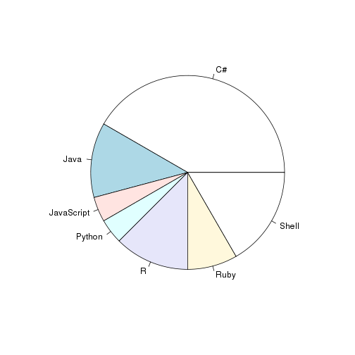

This guide gathers Terradue's Open Source projects.
[1] "matrix"
login id
[1,] "HerveCaumont" 1178261
[2,] "casconero" 804864
[3,] "crossi-T2" 3962882
[4,] "emmanuelmathot" 1178857
[5,] "enguer" 4060900
[6,] "fabricebrito" 1178901
avatar_url
[1,] "https://avatars.githubusercontent.com/u/1178261?v=2"
[2,] "https://avatars.githubusercontent.com/u/804864?v=2"
[3,] "https://avatars.githubusercontent.com/u/3962882?v=2"
[4,] "https://avatars.githubusercontent.com/u/1178857?v=2"
[5,] "https://avatars.githubusercontent.com/u/4060900?v=2"
[6,] "https://avatars.githubusercontent.com/u/1178901?v=2"
gravatar_id
[1,] "faeecf9e1a4e3ddc32a78b78f4e31d4c"
[2,] "2889769b4a407a8ab3259b44a3e7d172"
[3,] "6e2954d695ff67cf94f5a240b67b6722"
[4,] "0b15e52be4eefa4aa0003ac0e6affd9f"
[5,] "e83ff9737e04d2862ec3df82fbeb8589"
[6,] "58af56995c8118546453900be1266ff3"
url
[1,] "https://api.github.com/users/HerveCaumont"
[2,] "https://api.github.com/users/casconero"
[3,] "https://api.github.com/users/crossi-T2"
[4,] "https://api.github.com/users/emmanuelmathot"
[5,] "https://api.github.com/users/enguer"
[6,] "https://api.github.com/users/fabricebrito"
html_url
[1,] "https://github.com/HerveCaumont"
[2,] "https://github.com/casconero"
[3,] "https://github.com/crossi-T2"
[4,] "https://github.com/emmanuelmathot"
[5,] "https://github.com/enguer"
[6,] "https://github.com/fabricebrito"
followers_url
[1,] "https://api.github.com/users/HerveCaumont/followers"
[2,] "https://api.github.com/users/casconero/followers"
[3,] "https://api.github.com/users/crossi-T2/followers"
[4,] "https://api.github.com/users/emmanuelmathot/followers"
[5,] "https://api.github.com/users/enguer/followers"
[6,] "https://api.github.com/users/fabricebrito/followers"
following_url
[1,] "https://api.github.com/users/HerveCaumont/following{/other_user}"
[2,] "https://api.github.com/users/casconero/following{/other_user}"
[3,] "https://api.github.com/users/crossi-T2/following{/other_user}"
[4,] "https://api.github.com/users/emmanuelmathot/following{/other_user}"
[5,] "https://api.github.com/users/enguer/following{/other_user}"
[6,] "https://api.github.com/users/fabricebrito/following{/other_user}"
gists_url
[1,] "https://api.github.com/users/HerveCaumont/gists{/gist_id}"
[2,] "https://api.github.com/users/casconero/gists{/gist_id}"
[3,] "https://api.github.com/users/crossi-T2/gists{/gist_id}"
[4,] "https://api.github.com/users/emmanuelmathot/gists{/gist_id}"
[5,] "https://api.github.com/users/enguer/gists{/gist_id}"
[6,] "https://api.github.com/users/fabricebrito/gists{/gist_id}"
starred_url
[1,] "https://api.github.com/users/HerveCaumont/starred{/owner}{/repo}"
[2,] "https://api.github.com/users/casconero/starred{/owner}{/repo}"
[3,] "https://api.github.com/users/crossi-T2/starred{/owner}{/repo}"
[4,] "https://api.github.com/users/emmanuelmathot/starred{/owner}{/repo}"
[5,] "https://api.github.com/users/enguer/starred{/owner}{/repo}"
[6,] "https://api.github.com/users/fabricebrito/starred{/owner}{/repo}"
subscriptions_url
[1,] "https://api.github.com/users/HerveCaumont/subscriptions"
[2,] "https://api.github.com/users/casconero/subscriptions"
[3,] "https://api.github.com/users/crossi-T2/subscriptions"
[4,] "https://api.github.com/users/emmanuelmathot/subscriptions"
[5,] "https://api.github.com/users/enguer/subscriptions"
[6,] "https://api.github.com/users/fabricebrito/subscriptions"
organizations_url
[1,] "https://api.github.com/users/HerveCaumont/orgs"
[2,] "https://api.github.com/users/casconero/orgs"
[3,] "https://api.github.com/users/crossi-T2/orgs"
[4,] "https://api.github.com/users/emmanuelmathot/orgs"
[5,] "https://api.github.com/users/enguer/orgs"
[6,] "https://api.github.com/users/fabricebrito/orgs"
repos_url
[1,] "https://api.github.com/users/HerveCaumont/repos"
[2,] "https://api.github.com/users/casconero/repos"
[3,] "https://api.github.com/users/crossi-T2/repos"
[4,] "https://api.github.com/users/emmanuelmathot/repos"
[5,] "https://api.github.com/users/enguer/repos"
[6,] "https://api.github.com/users/fabricebrito/repos"
events_url
[1,] "https://api.github.com/users/HerveCaumont/events{/privacy}"
[2,] "https://api.github.com/users/casconero/events{/privacy}"
[3,] "https://api.github.com/users/crossi-T2/events{/privacy}"
[4,] "https://api.github.com/users/emmanuelmathot/events{/privacy}"
[5,] "https://api.github.com/users/enguer/events{/privacy}"
[6,] "https://api.github.com/users/fabricebrito/events{/privacy}"
received_events_url type
[1,] "https://api.github.com/users/HerveCaumont/received_events" "User"
[2,] "https://api.github.com/users/casconero/received_events" "User"
[3,] "https://api.github.com/users/crossi-T2/received_events" "User"
[4,] "https://api.github.com/users/emmanuelmathot/received_events" "User"
[5,] "https://api.github.com/users/enguer/received_events" "User"
[6,] "https://api.github.com/users/fabricebrito/received_events" "User"
site_admin
[1,] FALSE
[2,] FALSE
[3,] FALSE
[4,] FALSE
[5,] FALSE
[6,] FALSE
## Error: dim(X) must have a positive length
| Project | Stars |
|---|---|
| DotNet4One | 4 |
| rOpenSearch | 2 |
| DotNetOpenSearch | 1 |
| DotNetGeoJson | 1 |
| dcs-beam-algalbloom | 1 |
| Project | Forks |
|---|---|
| DotNetGeoJson | 3 |
| dcs-beam-algalbloom | 2 |
| ows-context-demo | 2 |
| DotNetOpenSearch | 1 |
| DotNet4One | 1 |
